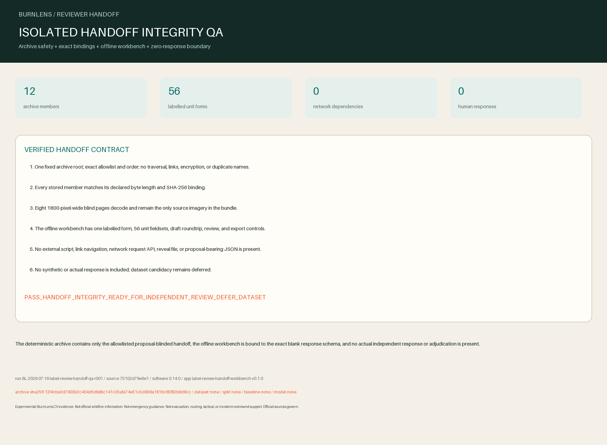

Experimental BurnLens CV evidence. Not official wildfire information. Not emergency guidance. Not evacuation, routing, tactical, or incident-command support. Official sources govern.

Decision
PASS_HANDOFF_INTEGRITY_READY_FOR_INDEPENDENT_REVIEW_DEFER_DATASET
The deterministic archive contains only the allowlisted proposal-blinded handoff, the offline workbench is bound to the exact blank response schema, and no actual independent response or adjudication is present.
Verified bundle
- 12 stored allowlisted members; SHA-256
12f4cbe3d7903b2c404d5dfafbc141c35afa74e51c5d0b9a1816c65f82b8d8cc. - 8 proposal-blinded PNG pages and 56 labelled unit fieldsets.
- No reveal, proposal-bearing packet JSON, adjudication material, provider byte, external script, link navigation, or network dependency.
- Completed independent responses: 0. Completed adjudications: 0.
Traceability and limits
Run: BL-2026-07-16-label-review-handoff-qa-r001
Git source: 75102d79e6e184a1ecac941900fd74938cdaa972
Packet SHA-256: 77067063a769645af13886b6c87cc236a10e06199d091743908d63556e07637c
Software / interface: 0.14.0 / label-review-handoff-workbench-v0.1.0
Dataset / split / baseline / model: none / none / none / none
- Not proven: Archive and interface integrity are not independent human review, reviewer identity verification, label fitness, adjudication, field validation, or accuracy.
- Not proven: No accepted label set, dataset, split, baseline, model, deployment, official status, or endorsement exists.